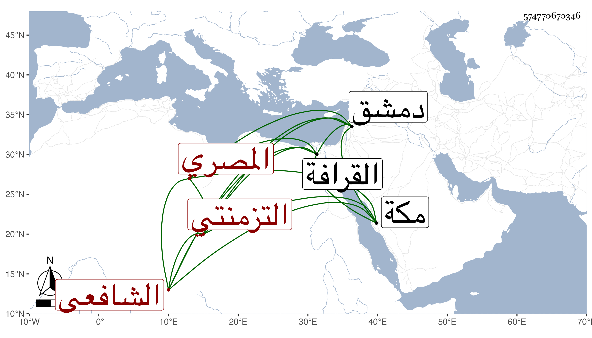

0902Sakhawi.DawLamic.ITO20230111-ara1.EIS1600.574770670346
Biography ID: 574770670346
1216
صدقة بن محمد بن حسن فتح الدين التزمنتي المصري الشافعي . قال شيخنا في إنبائه كان فاضلا في مذهبه أخذ عن أبي البقاء السبكي وسمع من بعض أصحاب الفخر بدمشق ثم سمع مع أصحابنا ومعنا كثيرا وكان ضيق الحال مات سنة تسع . وفي عقود المقريزي أنه زين الدين الأسعردي ثم المصري أحد أجناد الحلقة خدم الأكابر واختص بسعد الدين بن غراب فاشتهر وعرف بالخير ، وبنى بالقرافة تربة وحماما وجامعا وجاور بمكة ، مات في ربيع الآخر ونعم الرجل كان ، ويحرر التئامهما .
